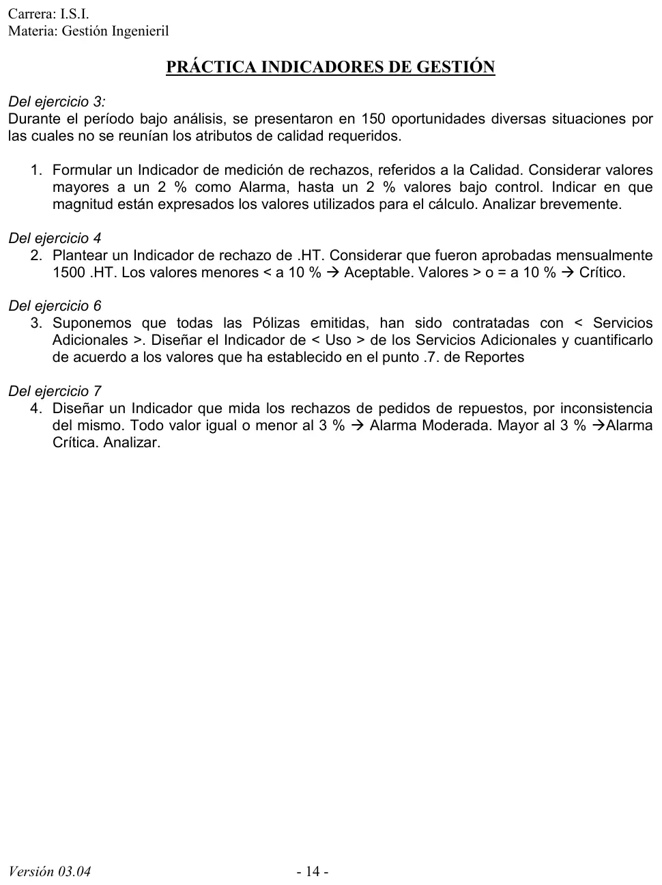

Práctica de indicadores de gestión
Práctica de la cátedra, 2017
Enunciado


Propuesta de respuesta
Respuesta no verificada. La propuso Luta Studios con inteligencia artificial y ningún docente la revisó. Puede tener errores.
Cada indicador va con su nombre, la fórmula, el cálculo con los datos del ejercicio, la unidad y el análisis contra el rango que da la consigna, como en el apunte de la cátedra.
1. Rechazos por calidad (ejercicio 3)
Es el rechazo de calidad del catálogo del apunte, aplicado a los insumos.
Magnitud. Los dos valores son cantidades de insumos en unidades, recipientes de 1 litro, contando cada situación como un rechazo. El resultado es un porcentaje, sin unidad.
| Rango | Estado |
|---|---|
| Hasta 2 % | Bajo control |
| Más de 2 % | Alarma |
Análisis. 6 % es tres veces el máximo tolerado, así que el indicador está en alarma. Se rechazan 6 de cada 100 unidades. Una causa posible está en el mismo proceso, porque la calidad la certifica el vendedor después de facturar.
2. Rechazo de hojas de trabajo (ejercicio 4)
La narrativa da 250 rechazos por mes, pero junta pedidos y hojas. Tomando los 250 como hojas, el peor caso, el valor es el siguiente.
| Rango | Estado |
|---|---|
| Menos de 10 % | Aceptable |
| 10 % o más | Crítico |
Análisis. 14.29 % está en crítico, una de cada siete hojas procesadas se rechaza. El indicador queda crítico mientras haya 167 hojas rechazadas o más de las 250, porque da . Para saberlo con certeza hay que registrar las hojas rechazadas aparte de los pedidos, que es la mejora del ejercicio 4.
3. Uso de los servicios adicionales (ejercicio 6)
Todas las pólizas tienen servicios adicionales, así que el indicador compara los servicios prestados con las pólizas que los tienen.
Los 132 prestados salen del reporte 7, y las 1000 pólizas son el parque asegurado.
Análisis. Se presta un servicio cada 7.6 pólizas por mes, más o menos. Del total, 21 fueron a cargo del cliente, el 15.91 % de lo prestado. Si ese porcentaje crece, hay pólizas que se quedan cortas de asistencias sin cargo y conviene revisar los planes. Como los valores del reporte 7 son de ejemplo, el resultado también lo es.
4. Rechazos de pedidos de repuestos por inconsistencia (ejercicio 7)
| Rango | Estado |
|---|---|
| Hasta 3 % | Alarma moderada |
| Más de 3 % | Alarma crítica |
Análisis. 6 % es el doble del límite, así que está en alarma crítica. Hay 90 pedidos en el mes en que no se pudo probar que el repuesto correspondía al desperfecto. Una forma de bajarlo es que la orden de reparación describa el desperfecto con un código standard y la firma del responsable técnico, así el Pañol tiene con qué analizar la consistencia.
Respuesta no verificada. Puede tener errores.
Se armó con las páginas del parcial, secciones Indicadores de gestión y Catálogo del apunte, y los ejercicios 3, 4, 6 y 7 de la práctica.
Quedó en duda: En el indicador 1, las 150 situaciones se contaron como unidades. Si una situación abarca varias unidades, numerador y denominador no estarían en la misma magnitud. En el 2, la narrativa junta los rechazos de pedidos y de hojas, y se tomó el peor caso. Se podría dividir también por las 1500 aprobadas, y daría 16.7 %, igual crítico. En el 4, los 90 casos se dividieron por las 1500 unidades pedidas. El 3 usa los valores de ejemplo del reporte 7.